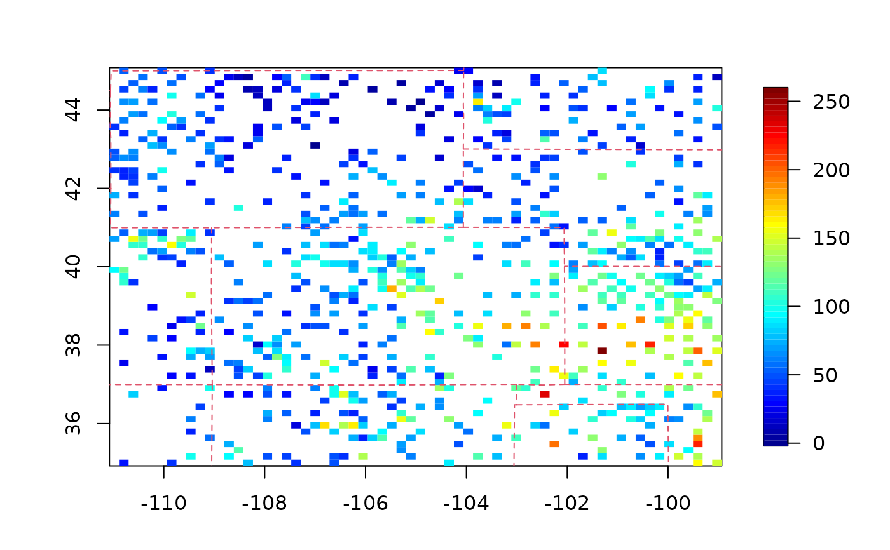
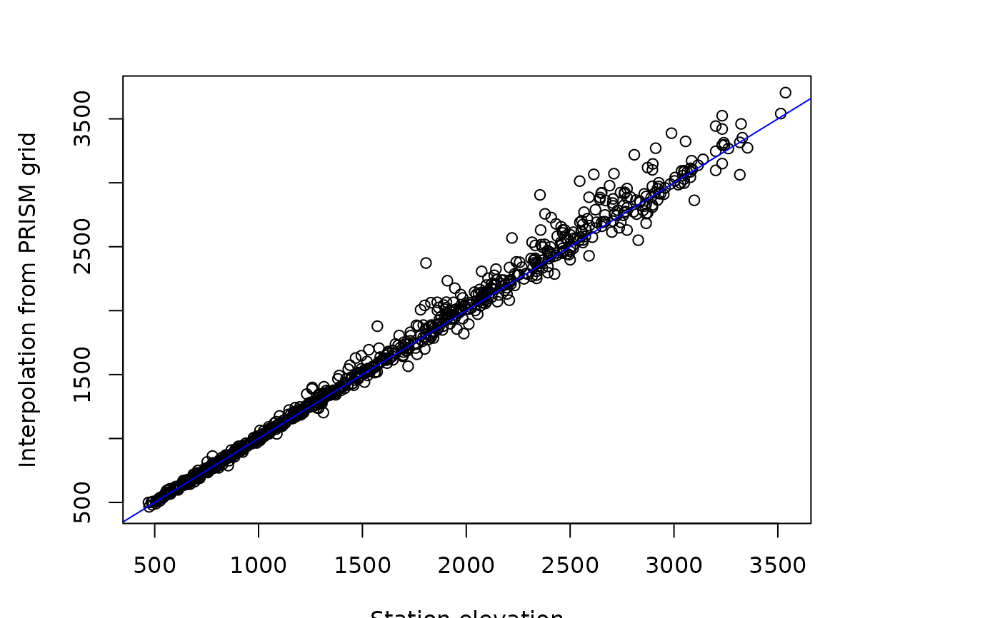
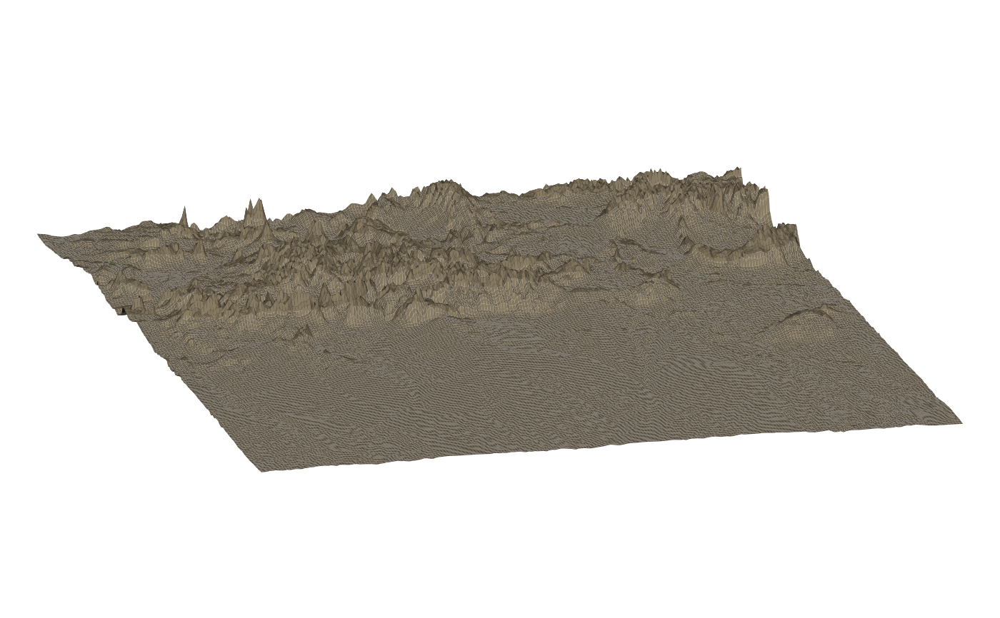
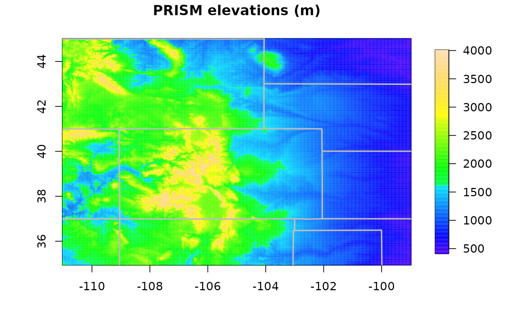

RMprecip.RdRMprecip is a useful spatial data set of moderate size consisting of 806
locations.
PRISMelevation and RMelevation are gridded elevations for the
continental US and Rocky Mountain region at 4km resolution.
Note that the gridded elevations from the PRISM data product are
different than the exact station elevations. (See example below.)
The data set RMprecip is a list containing the following components:
Longitude-latitude position of monitoring stations. Rows names are station id codes consistent with the US Cooperative observer network. The ranges for these coordinates are [-111, -99] for longitude and [35,45] for latitude.
Station elevation in meters.
Monthly total precipitation in millimeters. for August, 1997
The data sets
PRISMelevation and
RMelevation are lists
in the usual R grid format for images and contouring
They have the following components:
Longitude grid at approximately 4km resolution
Latitude grid at approximately 4km resolution
Average elevation for grid cell in meters
These elevations and the companion grid formed the basis for the 103-Year High-Resolution Precipitation Climate Data Set for the Conterminous United States ( see https://prism.oregonstate.edu/documents/PRISM_downloads_FTP.pdf and also archived at the National Climate Data Center. This work is authored by Chris Daly https://prism.oregonstate.edu and his PRISM group but had some contribution from the Geophysical Statistics Project at NCAR and is an interpolation of the observational data to a 4km grid that takes into account topography such as elevation and aspect.
Contact Doug Nychka for the binary file RData.USmonthlyMet.bin
and information on its source.
# explicit source code to create the RMprecip data
dir <- "" # include path to data file
load(paste(dir, "RData.USmonthlyMet.bin", sep="/")
#year.id<- 1963- 1895
year.id<- 103
#pptAUG63<- USppt[ year.id,8,]
loc<- cbind(USpinfo$lon, USpinfo$lat)
xr<- c(-111, -99)
yr<- c( 35, 45)
station.subset<- (loc[,1]>= xr[1]) & (loc[,1] <= xr[2]) & (loc[,2]>= yr[1]) & (loc[,2]<= yr[2])
ydata<- USppt[ year.id,8,station.subset]
ydata <- ydata*10 # cm -> mm conversion
xdata<- loc[station.subset,]
dimnames(xdata)<- list( USpinfo$station.id[station.subset], c( "lon", "lat"))
xdata<- data.frame( xdata)
good<- !is.na(ydata)
ydata<- ydata[good]
xdata<- xdata[good,]
test.for.zero.flag<- 1
test.for.zero( unlist(RMprecip$x), unlist(xdata), tag="locations")
test.for.zero( ydata, RMprecip$y, "values")
# this data set was created the
# historical data taken from
# Observed monthly precipitation, min and max temperatures for the coterminous US
# 1895-1997
# NCAR_pinfill
# see the Geophysical Statistics Project datasets page for the supporting functions
# and details.
# plot
quilt.plot(RMprecip$x, RMprecip$y)
US( add=TRUE, col=2, lty=2)

# comparison of station elevations with PRISM gridded values
data(RMelevation)
interp.surface( RMelevation, RMprecip$x)-> test.elev
plot( RMprecip$elev, test.elev, xlab="Station elevation",
ylab="Interpolation from PRISM grid")
abline( 0,1,col="blue")

# some differences with high elevations probably due to complex
# topography!
#
# view of Rockies looking from theSoutheast
save.par<- par(no.readonly=TRUE)
par( mar=c(0,0,0,0))
# fancy use of persp with shading and lighting.
persp( RMelevation, theta=75, phi= 15,
box=FALSE, axes=FALSE, xlab="", ylab="",
border=NA,
shade=.95, lphi= 10, ltheta=80,
col= "wheat4",
scale=FALSE, expand=.00025)

# reset graphics parameters and a more conventional image plot.
par( save.par)
image.plot(RMelevation, col=topo.colors(256))
US( add=TRUE, col="grey", lwd=2)
title("PRISM elevations (m)")
